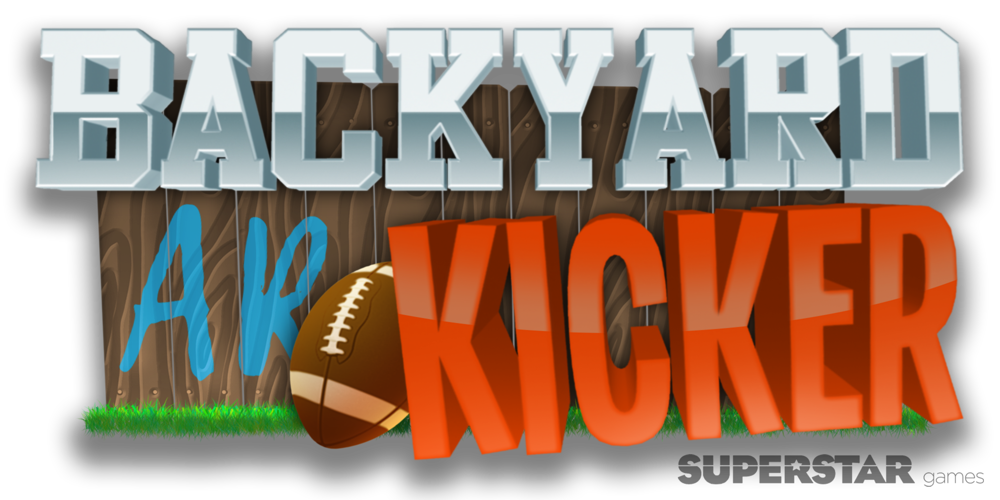

Downloads
Details
COMPANY
Superstar Games
PLATFORMS
iOS
DURATION
8 months
TEAM SIZE
2
ROLE
Gameplay Engineer
Overview
Backyard AR Kicker is a football-flicking game with a twist. Made for iOS devices, the game utilizes Apple ARKit to provide optional AR capabilities for the player. In the standard Arcade Mode, players compete for a place on the global leaderboard by scoring as many field goals as possible within the time limit. Using their powerup resources may enhance the player's score dramatically.
Reponsibilities
- Created a level-loading system using scriptable objects whose different properties allowed for varying levels of difficulties per stage
- Implemented an object pooling design that instantiated all pool elements at the start of the game and activated when necessary to enhance game performance for mobile devices
- Added powerups to enhance the player’s performance, such as pausing the game clock, doubling the points value, and multiplying the points value depending on the player’s current streak
- Contributed to art asset creation, including particle systems, 3D models and textures
- Integrated APIs and SDKs, including iOS leaderboards, OneSignal notifications, and Flurry analytics
- Provided additional optimization improvements and bug fixes by submitting version updates to users through iTunes Connect in collaboration with the development team as well as the company’s publisher